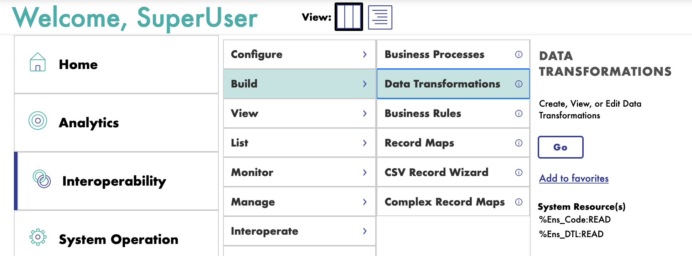
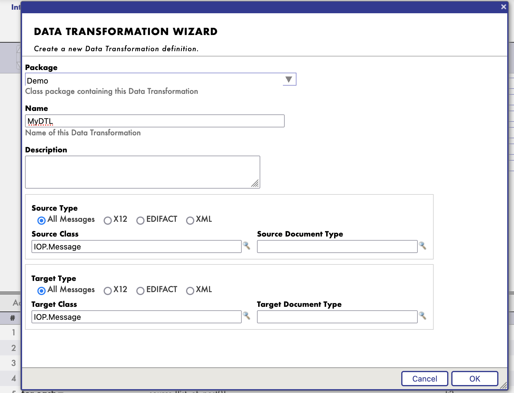
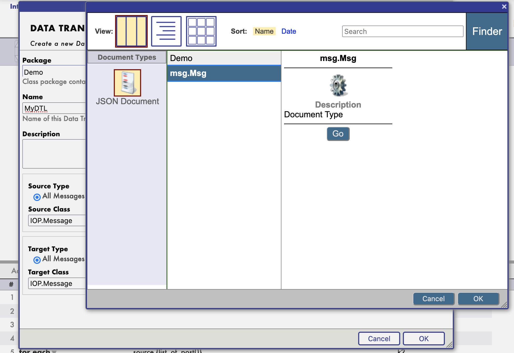
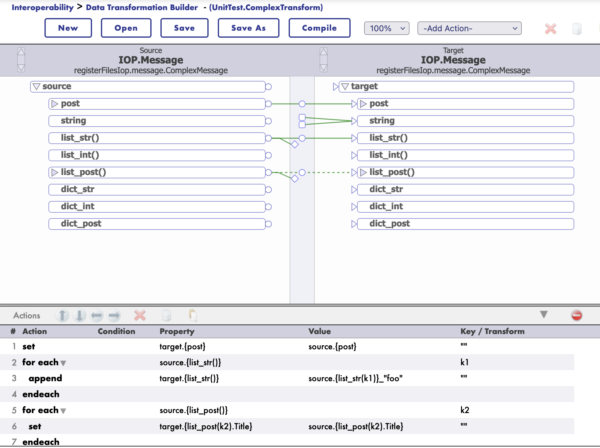
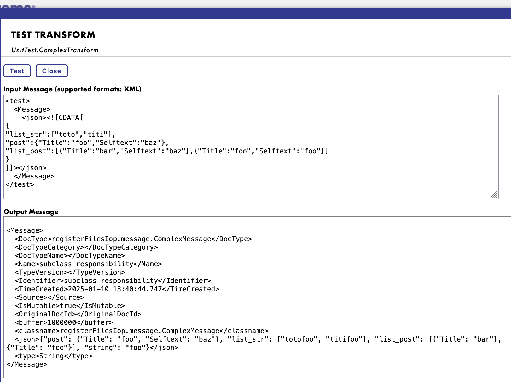

DTL Support
Starting with version 3.2.0, IoP supports DTL transformations.
DTL the Data Transformation Layer in IRIS Interoperability.
DTL transformations are used to transform data from one format to another with a graphical editor.
It supports also jsonschema structures.
How to use DTL in with Message
First you need to register you message class is a settings.py file.
To do so, you need to add the following line in the settings.py file:
settings.py
from msg import MyMessage
SCHEMAS = [MyMessage]
Then you can use iop migration command to generate schema files for your message classes.
iop --migrate /path/to/your/project/settings.py
Example
msg.py
from iop import Message
from dataclasses import dataclass
@dataclass
class MyMessage(Message):
name: str = None
age: int = None
settings.py
from msg import MyMessage
SCHEMAS = [MyMessage]
Migrate the schema files
iop --migrate /path/to/your/project/settings.py
Building a DTL Transformation
To build a DTL transformation, you need to create a new DTL transformation class.
Go to the IRIS Interoperability Management Portal and create a new DTL transformation.

Then select the source and target message classes.

And it's schema.

Then you can start building your transformation.

You can even test your transformation.

Example of payload to test as a source message:
<test>
<Message>
<json><![CDATA[
{
"list_str":["toto","titi"],
"post":{"Title":"foo","Selftext":"baz"},
"list_post":[{"Title":"bar","Selftext":"baz"},{"Title":"foo","Selftext":"foo"}]
}
]]></json>
</Message>
</test>
JsonSchema Support
Starting with version 3.2.0, IoP supports jsonschema structures for DTL transformations.
Same as for message classes, you need to register your jsonschema.
To do so, you need to invoke his iris command:
zw ##class(IOP.Message.JSONSchema).ImportFromFile("/irisdev/app/random_jsonschema.json","Demo","Demo")
Where the first argument is the path to the jsonschema file, the second argument is the package name and the third argument is the name of the schema.
Then you can use it in your DTL transformation.
The schema will be available in the name of Demo.
Example jsonschema file:
{
"$schema": "https://json-schema.org/draft/2020-12/schema",
"type": "object",
"title": "PostMessage",
"properties": {
"post": {
"allOf": [
{
"$ref": "#/$defs/PostClass"
}
]
},
"to_email_address": {
"type": "string",
"default": null
},
"my_list": {
"type": "array",
"items": {
"type": "string"
}
},
"found": {
"type": "string",
"default": null
},
"list_of_post": {
"type": "array",
"items": {
"allOf": [
{
"$ref": "#/$defs/PostClass"
}
]
}
}
},
"$defs": {
"PostClass": {
"type": "object",
"title": "PostClass",
"properties": {
"title": {
"type": "string"
},
"selftext": {
"type": "string"
},
"author": {
"type": "string"
},
"url": {
"type": "string"
},
"created_utc": {
"type": "number"
},
"original_json": {
"type": "string",
"default": null
}
},
"required": [
"title",
"selftext",
"author",
"url",
"created_utc"
]
}
}
}
Example of DTL Transformation with JsonSchema or Message Class
Many can be found in the UnitTest package ./src/tests/cls directory.
Class UnitTest.ComplexTransform Extends Ens.DataTransformDTL [ DependsOn = IOP.Message ]
{
Parameter IGNOREMISSINGSOURCE = 1;
Parameter REPORTERRORS = 1;
Parameter TREATEMPTYREPEATINGFIELDASNULL = 0;
XData DTL [ XMLNamespace = "http://www.intersystems.com/dtl" ]
{
<transform sourceClass='IOP.Message' targetClass='IOP.Message' sourceDocType='registerFilesIop.message.ComplexMessage' targetDocType='registerFilesIop.message.ComplexMessage' create='new' language='objectscript' >
<assign value='source.{post}' property='target.{post}' action='set' />
<foreach property='source.{list_str()}' key='k1' >
<assign value='source.{list_str(k1)}_"foo"' property='target.{list_str()}' action='append' />
</foreach>
<foreach property='source.{list_post()}' key='k2' >
<assign value='source.{list_post().Title}' property='target.{list_post(k2).Title}' action='append' />
</foreach>
</transform>
}
}